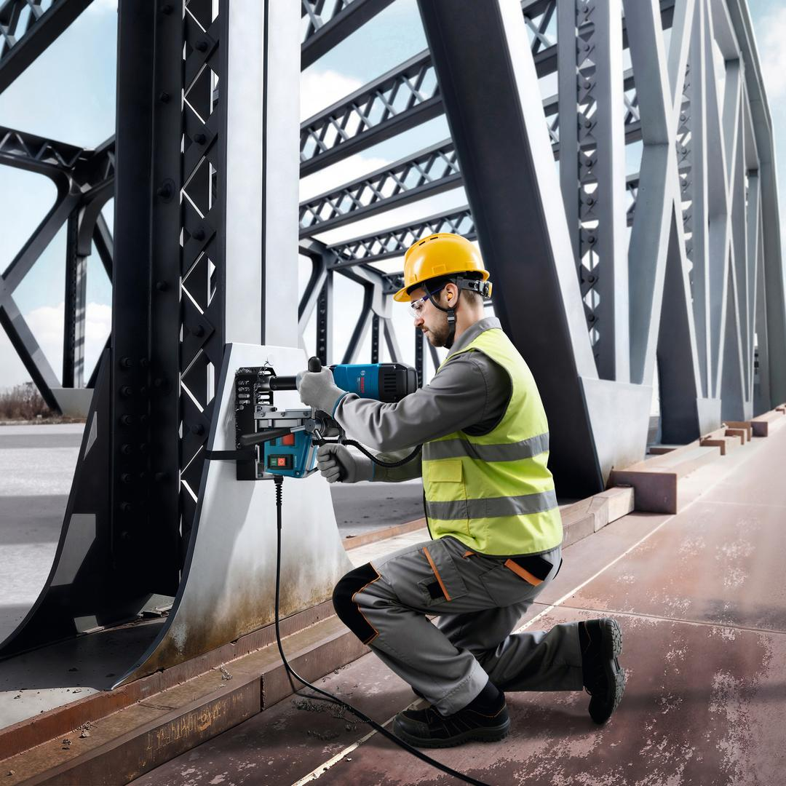
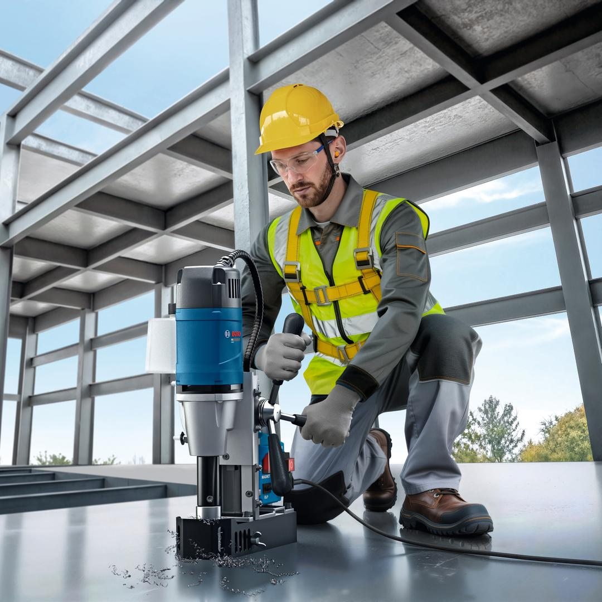
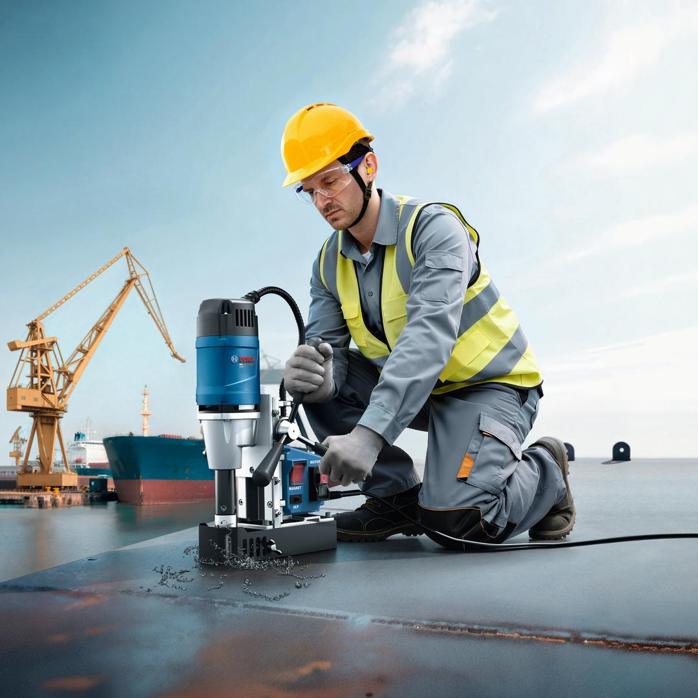
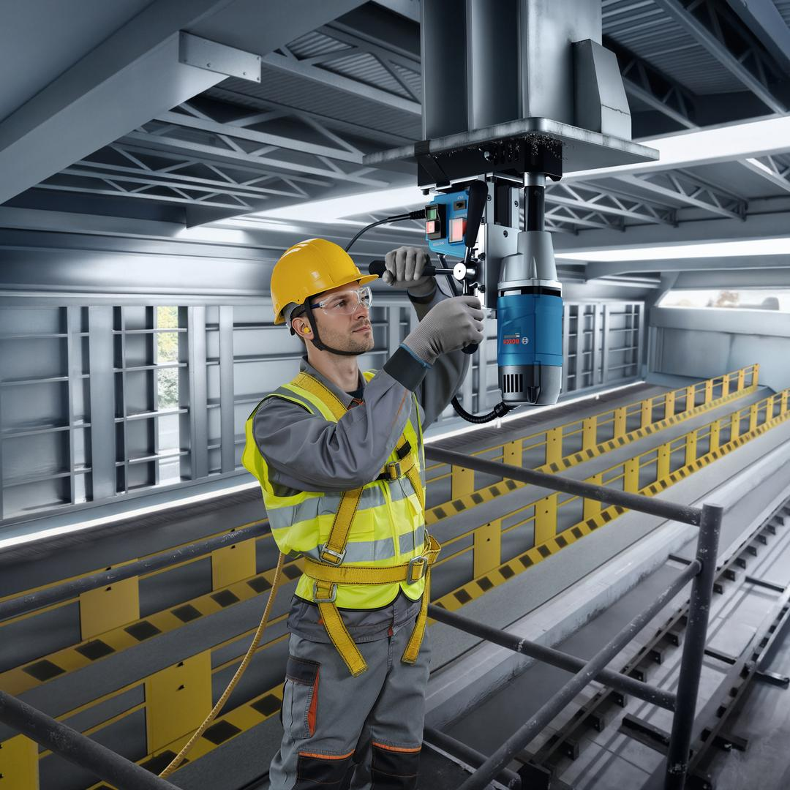
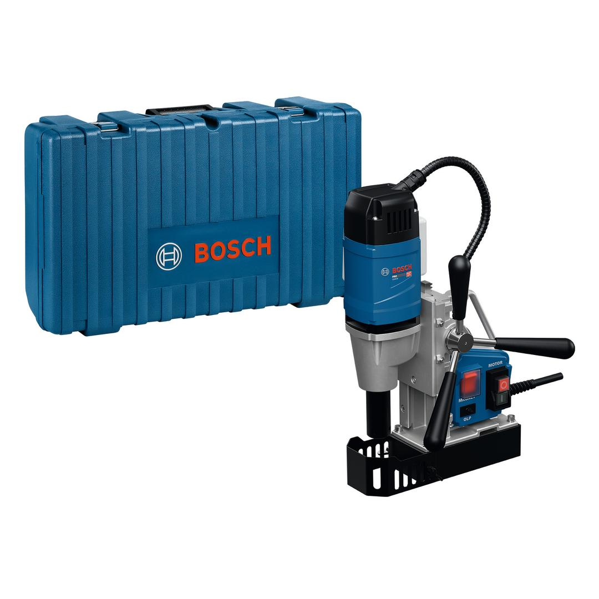

06011C5000





The GBM 38 Professional makes working overhead and at heights easier with its compact, ergonomic, low-weight design. This magnetic core drill is a strong performer delivering a drilling capacity of 12-38 mm for at least 85% of all applications. And you get exceptional value – a drill that offers 450 rpm speed and 1050 W power at a price that’s easy on your budget.
| Weight |
10.5 kg |
Affordable and ergonomic – the light-weight tool for heavy drilling
The GBM 38 Professional is made for core drilling and drilling in metal structures. It is the ideal tool for metal installation work, locksmiths, industrial metal fabrication, framers and roofers and rough carpenters.
This magnetic core drill comes in a case with a coolant bottle and accessories.